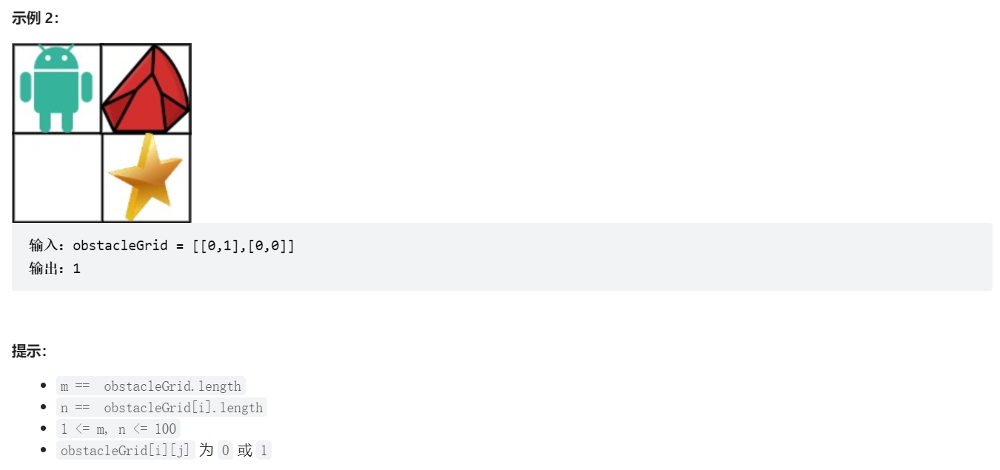

代码-动态规划¶
动规解题思路¶
- 动规题目四个关键：（1）
dp数组含义；（2）递推公式；（3）初始化方式；（4）遍历顺序 - 背包问题几个关键点：
- 01背包（每个物品只能使用一次）和完全背包（物品可多次使用）在采用一维
dp数组时遍历顺序不同，01背包为了保证物品不重复使用，需要倒序遍历背包；而完全背包则需要正序遍历；==01背包>>倒叙遍历背包；完全背包>>正向遍历背包== - 求排列数和组合数时遍历背包和物品的顺序不同，如果先遍历物品，那么产生组合数（假设前两个元素是a,b,那么遍历只能产生a,b这样顺序的组合）；而如果先遍历背包，那么则产生排列数。此外，求排列数和组合数时
dp[0]都需要初始化为1。==排列>>先遍历背包；组合>>先遍历物品== - 初始化方式需要根据递推公式以及题目来确定，首先除第一个元素之外的元素的初始化需要根据递推公式来判断，如果递推公式包含min/max，则初始化为inf/-inf；第一个元素的初始化则需要具体问题具体分析，不一定有很好解释的意义。
题目¶
62. 不同路径¶
题解：
- 这道题
dp数组含义以及递推公式都很容易求得，关键在于dp数组的初始化方式,因为第一行和第一列都需要等于1，所以这里初始化为全1数组。
class Solution:
def uniquePaths(self, m: int, n: int) -> int:
dp = [[1] * n for _ in range(m)]
for i in range(1, m):
for j in range(1, n):
dp[i][j] = dp[i][j-1] + dp[i-1][j]
return dp[m-1][n-1]
63. 不同路径 II¶

题解：
- 这道题的关键在于初始化方式，第一行和第一列在没有遇到障碍物之前
dp数组应该为1，但是遇到之后应该等于0（另外要注意的是python中数组用列表表示时不能按照索引同时修改多个子列表，例如dp[1:][0]=0是不行的）
class Solution:
def uniquePathsWithObstacles(self, obstacleGrid: List[List[int]]) -> int:
m, n = len(obstacleGrid), len(obstacleGrid[0])
dp = [[0] * n for _ in range(m)]
for i in range(n):
if obstacleGrid[0][i] == 0:
dp[0][i] = 1
else:
break
for i in range(m):
if obstacleGrid[i][0] == 0:
dp[i][0] = 1
else:
break
for i in range(1, m):
for j in range(1, n):
if obstacleGrid[i][j] == 1:
dp[i][j] = 0
else:
dp[i][j] = dp[i-1][j] + dp[i][j-1]
return dp[-1][-1]
343. 整数拆分¶

题解:
- 这道题的关键是找到递推公式，
dp[i]表示整数i分解之后乘积的最大值，那么遍历i，则i可以划分成j和i-j两部分，乘积可以表示成j*(i-j)或者j*dp[i-j]，其中前者表示拆成两个数，后者表示拆成3个以上的数，那么递推公式就可以表示成dp[i]=max(dp[i],j*(i-j),j*dp[i-j]) - 这里一开始我写的递推公式是
dp[i] = max(dp[i], dp[j] * dp[i-j], dp[j] * (i-j), j * dp[i-j], j * (i-j)) - 另外j的取值范围可以写成到
i//2+1
class Solution:
# 假设对正整数 i 拆分出的第一个正整数是 j（1 <= j < i），则有以下两种方案：
# 1) 将 i 拆分成 j 和 i−j 的和，且 i−j 不再拆分成多个正整数，此时的乘积是 j * (i-j)
# 2) 将 i 拆分成 j 和 i−j 的和，且 i−j 继续拆分成多个正整数，此时的乘积是 j * dp[i-j]
def integerBreak(self, n):
dp = [0] * (n + 1) # 创建一个大小为n+1的数组来存储计算结果
dp[2] = 1 # 初始化dp[2]为1，因为当n=2时，只有一个切割方式1+1=2，乘积为1
# 从3开始计算，直到n
for i in range(3, n + 1):
# 遍历所有可能的切割点
for j in range(1, i // 2 + 1):
# 计算切割点j和剩余部分(i-j)的乘积，并与之前的结果进行比较取较大值
dp[i] = max(dp[i], max((i - j) * j, dp[i - j] * j))
return dp[n] # 返回最终的计算结果
96. 不同的二叉搜索树¶

题解：
- 关键是要找到递推公式。首先定义
dp数组表示1-n个数字可组成的搜索二叉树的数目（其实==等价于n个不用的数可组成的搜索二叉树数目==）考虑一般情况，对于整数i，如果以j为头节点，那么左子树包含j-1个数字，右子树包含i-j个数字，那么容易推出递推公式为：dp[i]+=dp[j-1]*dp[i-j]
class Solution:
def numTrees(self, n: int) -> int:
dp = [0] * (n+1)
dp[0] = 1
for i in range(1, n+1):
for j in range(1, i+1):
dp[i] += dp[j-1] * dp[i-j]
return dp[-1]
125 · 背包问题（二）¶

题解：
- 首先考虑二维
dp数组的情形，此时dp[i][j]表示从前i个物品中选择，背包容量为j时的最大价值；递推公式容易推得为dp[i][j]=max(dp[i-1][j], dp[i-1][j-A[i]]+V[i]) - 因为在二维情况下
dp数组第i行只与第i-1行有关，因此可以用一维dp数组表示，也就是==每一轮i对应一组一维dp==，也就是说当更新到新一轮i的时候，dp保存的是i-1时的结果，此时如果顺序遍历j，则更小的j已经被更新了，不再是i-1的结果了，结合dp数组定义可知顺序遍历时有可能背包为j-1时就已经使用了物品i（或者更小的背包就已经使用了）,当背包为j时可能又再次使用物品i，所以不满足每种物品只使用一次的条件，这也是01背包和完全背包的区别，即01背包需要逆序遍历。递推公式为dp[j]=max(dp[j], dp[j-A[i]]+V[i]) - 参考https://www.acwing.com/solution/content/116859/
# 二维dp数组情况
class Solution:
"""
@param m: An integer m denotes the size of a backpack
@param a: Given n items with size A[i]
@param v: Given n items with value V[i]
@return: The maximum value
"""
def back_pack_i_i(self, m: int, a: List[int], v: List[int]) -> int:
# write your code here
dp = [[0] * (m+1) for _ in range(len(a))]
# 先初始化第一行,因为dp数组更新要求已知前一行
for j in range(m+1):
if j >= a[0]:
dp[0][j] = v[0]
for i in range(1, len(a)):
for j in range(1, m+1):
if j >= a[i]:
dp[i][j] = max(dp[i-1][j], dp[i-1][j-a[i]]+v[i])
else:
dp[i][j] = dp[i-1][j]
return dp[-1][-1]
# 一维dp数组情况
class Solution:
"""
@param m: An integer m denotes the size of a backpack
@param a: Given n items with size A[i]
@param v: Given n items with value V[i]
@return: The maximum value
"""
def back_pack_i_i(self, m: int, a: List[int], v: List[int]) -> int:
# write your code here
dp = [0] * (m+1)
# 这里不用初始化第一行,因为这里的递推公式就包含了第一行初始化的逻辑
for i in range(len(a)):
for j in range(m, a[i]-1, -1): # 逆序遍历背包
dp[j] = max(dp[j], dp[j-a[i]]+v[i])
return dp[-1]
53. 最大子数组和¶
题解：
- 动态规划很好理解：
dp数组元素dp[i]定义为以nums[i]结尾的最大连续子数组，当dp[i-1]<0时,dp[i]=nums[i]; 当dp[i-1]>=0时，dp[i]=dp[i-1]+nums[i]。初始化方式为dp[0]=nums[0]。==由于
dp[i]只与dp[i-1]和nums[i]相关，所以可以直接修改nums[i]==
# 基础dp
class Solution:
def maxSubArray(self, nums: List[int]) -> int:
n = len(nums)
dp = [0] * n
dp[0] = nums[0]
for i in range(1, n):
if dp[i-1] > 0:
dp[i] = dp[i-1] + nums[i]
else:
dp[i] = nums[i]
return max(dp)
# dp进一步优化
class Solution:
def maxSubArray(self, nums: List[int]) -> int:
for i in range(1, len(nums)):
nums[i] += max(nums[i - 1], 0)
return max(nums)
1049. 最后一块石头的重量 II¶

题解：
- 首先根据题意可以做如下抽象：\(\sum_{i=0}^{n-1} k_i*stones[i], k_i \sub \{ -1, 1\}\)中的合理组合可以表示最终石头的重量。下面证明此假设(摘录自
leetcode官方题解)：
假设存在一组\(\sum_{i=0}^{n-1} k_i*stones[i], k_i \sub \{ -1, 1\}\)使得最终留下的石头重量最小，也就是说明当将石头分成\(k_i\)分别为-1，1两类后，一定可以找到一种分解方式使得最终留下的石头重量最小。
假设\(k_i=1\)和\(k_i=-1\)的两组石头分别为A，B，（A，B质量和的差值等于
diff）每次从A中拿出最大的一块石头和B中任意一块碰撞，那么结果是两组石头重量同时减少，将剩下的石头放入A中并继续此流程，最终剩下的石头重量就为diff。
- 根据上述合理性证明，假设A,B两组的重量分别为a，b=sum-a，那么它们之间的质量差为
diff=|a-(sum-a)|=|2a-sum|，所以此题等价于找到一种分解方式，使得一组石头重量接近总重量的一半。这就可以利用01背包问题求解，其中背包重量等于石头总重量的一半。
class Solution:
def lastStoneWeightII(self, stones: List[int]) -> int:
s = sum(stones)
target = s // 2
dp = [0] * (target + 1)
for stone in stones:
for j in range(target, stone-1, -1):
dp[j] = max(dp[j], dp[j-stone]+stone)
return s - dp[-1] * 2
416. 分割等和子集¶

题解：
- 首先明确本题为背包问题，背包最大可装物品重量为数组和的一半，物品重量和价值都等于数组元素数值。
class Solution:
def canPartition(self, nums: List[int]) -> bool:
n = len(nums)
target = sum(nums) // 2
if target * 2 != sum(nums):
return False
dp = [0] * (target + 1)
for i in range(n):
for j in range(target, nums[i]-1, -1):
dp[j] = max(dp[j], dp[j-nums[i]]+nums[i])
if dp[-1] == target:
return True
return False
494.目标和¶

题解：
-
假设添加
+号的元素和为l,添加负号的元素和为r，可以计算得到r=(s-target)/2。那么本题就转化为可以找到多少组数使得和等于r，每个数只能使用一次，这等价于01背包问题。但是dp数组含义略有不同，这里dp数组元素表示背包大小为j时，有多少种组合方式可以装满背包。递推公式为：dp[j]+=dp[j-num] -
初始化方式：
dp[0]=1,其他dp数组元素初始化为0。dp[0]=1有两种解释： -
直接从
dp数组含义角度，0个元素装满背包大小为0有1种组合方式； - 如果有一个元素可以选择，元素为k，那么装满k的背包有几种组合？按照递推公式，应该有
dp[k]+dp[0]种方式，可以看出dp[0]应该初始化为1。==另外，如果dp[0]=0,那么所有dp数组的元素都将是0==
这种问题叫组合类背包问题，
dp数组和递推公式与原始01背包问题不同。
class Solution:
def findTargetSumWays(self, nums: List[int], target: int) -> int:
s = sum(nums)
if target > s:
return 0
r = (s - target) // 2
if r * 2 != s - target:
return 0
dp = [0] * (r + 1)
dp[0] = 1
for num in nums:
for i in range(r, num-1, -1):
dp[i] += dp[i-num]
return dp[-1]
474.一和零¶
题解：
- 本题01背包的维度有两维
class Solution:
def findMaxForm(self, strs: List[str], m: int, n: int) -> int:
dp = [[0] * (n+1) for _ in range(m+1)]
for s in strs:
n_zero = s.count('0')
n_one = len(s) - n_zero
for i in range(m, n_zero-1, -1):
for j in range(n, n_one-1, -1):
dp[i][j] = max(dp[i][j], dp[i-n_zero][j-n_one]+1)
return dp[-1][-1]
440.背包问题（三）¶
题解：
- 本题属于==完全背包问题==，即每个物品可以重复使用；采用一维
dp数组时，完全背包问题和01背包问题的解决方式唯一的不同之处在于背包的遍历顺序。 - 采用二维
dp数组时，则存在两点不同之处，一个是初始化的方式，另一个就是递推公式。
# 二维dp数组
class Solution:
"""
@param a: an integer array
@param v: an integer array
@param m: An integer
@return: an array
"""
def back_pack_i_i_i(self, a: List[int], v: List[int], m: int) -> int:
# write your code here
n = len(a)
if n == 0:
return 0
dp = [[0] * (m+1) for _ in range(n)]
for j in range(m+1):
if j >= a[0]:
dp[0][j] = dp[0][j-a[0]]+v[0] # 不同于01背包的初始化
for i in range(1, n):
for j in range(m+1):
if j >= a[i]:
dp[i][j] = max(dp[i-1][j], dp[i][j-a[i]]+v[i]) # 不同于01背包的递推公式
else:
dp[i][j] = dp[i-1][j]
return dp[-1][-1]
# 一维dp数组
class Solution:
"""
@param a: an integer array
@param v: an integer array
@param m: An integer
@return: an array
"""
def back_pack_i_i_i(self, a: List[int], v: List[int], m: int) -> int:
# write your code here
dp = [0] * (m+1)
n = len(a)
for i in range(n):
for j in range(a[i], m+1):
dp[j] = max(dp[j], dp[j-a[i]]+v[i])
return dp[-1]
518.零钱兑换||¶

题解：
- 完全背包问题；组合问题；
dp[i]表示组合成i的组合数；dp[0]初始化为1，其他初始化为0；递推公式：dp[i]+=dp[i-coin];先遍历物品，再遍历背包；正向遍历背包
class Solution:
def change(self, amount: int, coins: List[int]) -> int:
dp = [0] * (amount + 1)
dp[0] = 1
for coin in coins:
for i in range(coin, amount+1):
dp[i] += dp[i-coin]
return dp[-1]
377.组合综合VI¶

题解：
- 完全背包；排列问题
dp[i]表示目标为i时的组合个数；递推公式：dp[i]+=dp[i-num];dp[0]=0，其他元素初始化为0；正向遍历背包；先遍历背包，再遍历物品- 本题可以从爬楼梯问题进阶得到：爬楼梯，每次可以走1，2，...，m步，总共n步，问有多少种走法？
class Solution:
def combinationSum4(self, nums: List[int], target: int) -> int:
dp = [0] * (target + 1)
dp[0] = 1
for i in range(1, target + 1):
for num in nums:
if i >= num:
dp[i] += dp[i-num]
return dp[-1]
322.零钱兑换¶
题解：
- 完全背包；
dp[i]表示凑足总金额为i所需的最小硬币个数；递推公式：dp[i]=min(dp[i],dp[i-coin]+1);初始化方式：dp[0]=0其他元素初始化为无穷大（由于递推公式包含最小的比较）；背包正向遍历；背包和物品之间的遍历顺序没有限制
class Solution:
def coinChange(self, coins: List[int], amount: int) -> int:
dp = [float('inf')] * (amount + 1)
dp[0] = 0
for coin in coins:
for i in range(coin, amount + 1):
dp[i] = min(dp[i], dp[i - coin] + 1)
return dp[-1] if dp[-1] != float('inf') else -1
279.完全平方数¶
题解：
- 完全背包问题；
dp[j]表示和为j的完全平方数的最小数量；递推公式：dp[j] = min(dp[j], dp[j - i * i] + 1);初始化：递推公式涉及min，所以初始化为无穷大dp = [float('inf')] * (n + 1)，dp[0]初始化为0，表示和为0的完全平方数为0；遍历顺序：非组合/排列问题->先遍历背包还是物品都行，完全背包->正向遍历背包。
class Solution:
def numSquares(self, n: int) -> int:
target = int(n ** 0.5)
dp = [float('inf')] * (n + 1)
dp[0] = 0
for i in range(1, target + 1):
for j in range(i * i, n + 1):
dp[j] = min(dp[j], dp[j - i * i] + 1)
return dp[-1]
139.单词拆分¶
题解：
- 完全背包；排列问题
dp[i]表示字符串的前i个元素是否可以被单词字典组成；递推公式：如果s[j-i:i]在单词字典中，并且dp[j]为真，那么dp[i]为真；初始化：dp[0]=True（如果为False，则所有元素都是False），其他元素初始化为False；遍历顺序：排列问题->先遍历背包- ==本题需要注意
dp数组和字符串长度不一样，需要注意下标对齐的问题==
class Solution:
def wordBreak(self, s: str, wordDict: List[str]) -> bool:
n = len(s)
dp = [False] * (n + 1)
dp[0] = True
for i in range(1, n + 1):
for word in wordDict:
if i >= len(word) and (dp[i - len(word)] and word == s[i - len(word) : i]):
dp[i] = True
return dp[-1]
198.打家劫舍¶

题解：
dp[i]表示前i家可以偷窃得到的最高金额；递推公式：如果偷第i家，那么最高金额为nums[i]+dp[i-2],如果不偷第i家，则为dp[i-1],所以递推公式为dp[i]=max(dp[i-1],nums[i]+dp[i-2]);初始化：dp[0]=nums[0],dp[1]=max(dp[0],dp[1]),其他元素初始化为-inf
class Solution:
def rob(self, nums: List[int]) -> int:
n = len(nums)
if n < 3:
return max(nums)
dp = [-float('inf')] * n
dp[0] = nums[0]
dp[1] = max(nums[0], nums[1])
for i in range(2, n):
dp[i] = max(dp[i-1], dp[i-2] + nums[i])
return dp[-1]
# 由于dp数组之和nums[i]以及dp[i-1],dp[i-2]相关,因此有两种空间优化方式：
# 1. 只记录dp[i-1],dp[i-2]两个量
# 2. 只更新nums
class Solution:
def rob(self, nums: List[int]) -> int:
n = len(nums)
if n < 3:
return max(nums)
nums[1] = max(nums[0], nums[1])
for i in range(2, len(nums)):
nums[i] = max(nums[i - 2] + nums[i], nums[i - 1])
return nums[-1]
122.买卖股票的最佳时机II¶
题解：
-
动态规划：
-
贪心：由于本题可以多次买卖，因此直接计算正利润之和就行
class Solution:
def maxProfit(self, prices: List[int]) -> int:
res = 0
for i in range(1, len(prices)):
if prices[i] - prices[i - 1] > 0:
res += prices[i] - prices[i - 1]
return res